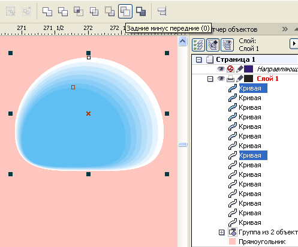

КАПЛЯ, РОСИНКА, СЛЕЗА
Создадим форму росинки из круга, приплюснув его снизу (для капли или слезы – соответственную форму).
Создайте дубль полученной формы, уменьшите примерно до 70 % и сместите, как показано на рисунке ниже.
Создайте дубль полученной пары фигур, они пригодятся в дальнейшем, а пока, чтобы они не мешали, задайте им заливку без цвета и перетащите на нижний уровень или на другой, невидимый слой.
Создайте между двумя объектами перетекание. При размерах росинки около 2 мм шести шагов перетекания будет достаточно.
Всё разъедините и разгруппируйте.
Создайте 7 дублей исходной формы (число шагов перетекания плюс одну). Выделяйте поочерёдно пару фигур: одну из полученных перетеканием и копию исходной формы и создавайте комбинированный контур (задние минус передние).

Должно получиться 7 комбинированных контуров. Задайте им однородную прозрачность с уровнем прозрачности 93 - 96 (для наглядности одна лишняя копия исходной фигуры на рисунке ниже без заливки).
Теперь из той самой лишней копии создадим блик, задав белую заливку, радиальную прозрачность и перетащив на самый верхний уровень.
Теперь выбирете комбинированный контур с наименьшей шириной между внешним и внутренним контуром и задайте ему линейную прозрачность как показано на рисунке ниже. Таким образом создадим высветленный верхний край росинки.
Теперь из пары фигур, которую мы предусмотрительно продублировали в самом начале, создадим временную вспомогательную фигуру в качестве источника тени. Ту фигуру, что была уменьшена до 70%, снова увеличьте и сместите как показано на рисунке ниже, чтобы после вычитания из нижней фигуры верхней, получилась фигура вроде бумеранга.
Используя стандартные заготовки, создайте тень из полученной фигуры. Разъедините. Фигуру-источник тени удалите, а тень поместите в капельку с помощью эффекта контейнер. Подробно о действиях с контейнером – в других уроках. Настройки тени, непрозрачность, размытие, цвет подберите сами. Режим смешивания лучше использовать обычный. Цвет с учётом цвета фона: на розовом – темнокоричневый, на зелёном – тёмно-зелёный.
Используя стандартные заготовки, создайте тень от капельки (параметры тени подберите сами).
Разъедините. Трансформируйте тень по своему усмотрению.
Сипециально для CDRPRO.RU
Копирование данного урока или части его и публикация любым способом без письменного согласия автора запрещено.
А я вот как капельки и пузырики рисую
sergey, тоже написал бы урок.
Очень даже было бы интересно.
Solowejka, sergey, вам уже пора зарегистрироваться как один пользователь, и писать уроки вместе под одним ником :D
Типа как КуКрыНиксы, что ли?
да шучу я :)